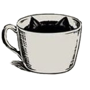

О нас
Котокафе «Anteiku» – это уютное пространство, в котором вы можете окунуться в атмосферу размеренности кошачьей жизни.
У нас в гостях можно отдохнуть или поработать, хотя второе будет сделать непросто под успокаивающее мурчание.
25 причин не откладывать поход в Котокафе «Anteiku»
– Увидеть в одном месте больше десяти здоровых и счастливых котиков, бывших когда-то бездомными.
– Удивить близких встречей в «кафе» необычного формата.
– Безлимитный чай и печенье. Ешь сколько хочешь :)
– Проверить есть ли у вас аллергия :)
– Поиграть с компанией в настольные игры.
– Погреться зимой или охладиться летом, после прогулки по лесу/городу.
– Попробовать вкусные десерты и напитки.
– Купить подарок себе или друзьям, средства с покупки которого отправятся на помощь бездомным животным.
– В «Anteiku» уютно, как у бабушки на даче :)
– Выбрать себе домашнего любимца, у которого уже известен характер и привычки,
с дальнейшей поддержкой в течение всей жизни питомца, при необходимости.
– Узнать больше о переработке мусора.
– Подходящая атмосфера для спокойного чтения книг, своих или наших.
Мы рады приветствовать вас в нашем котокафе! У нас живут бывшие бездомные коты, полностью готовые к поиску новых хозяев. Благодаря котокафе "Anteiku", около шестидесяти котов в год находят свой новый дом!
Мы работаем в режиме тайм-кафе - вы оплачиваете время, которое находитесь в котокафе, при этом можете приносить еду и напитки с собой (кроме алкоголя). Чай: черный/зеленый и печенье включены в стоимость.
Котокафе "Anteiku" - это пространство в котором комфортно сосуществуют котики и люди. И, чтобы это соседство было приятным для всех, у нас действуют определенные правила:
– Чтобы в нашем котокафе поддерживалась чистота и порядок, а котики могли беспрепятственно передвигаться, в котокафе предусмотрена сменная обувь. Для посетителей предлагаются многоразовые бахилы и тапочки. Желающие могут принести сменную обувь. Если вы захотите ходить босиком, мы тоже не будем ругаться :)
– При входе и выходе из котокафе обязательно обработайте руки или помойте с мылом, для вашего удобства на входе расположен антисептик.
– Главное правило котокафе - не делать ничего против воли котиков! Котов нельзя будить, удерживать силой на руках, тянуть за лапы/уши/хвосты, поднимать на второй ярус, кормить без разрешения администратора и т.д. Администрация котокафе оставляет за собой право сделать замечание, если посетитель нарушает правила заведения. Особенно если ведет себя некорректно по отношению к животным. При повторном замечании, персонал вправе попросить посетителя покинуть котокафе без возврата оплаченных средств.
– Для комфорта животных и остальных посетителей в котокафе нельзя курить и распивать спиртные напитки, а также находиться в состоянии алкогольного или наркотического опьянения.
– Кормить кошек можно только приобретенной в котокафе едой, после консультации с администратором. Некоторые животные питаются только лечебным кормом, а также есть животные с чувствительным пищеварением и аллергией на некоторые виды кормов и лакомств.
– Своих животных нельзя приводить в котокафе! Во избежание переноса инфекций и стресса для ваших животных и наших "постояльцев".
- Если у вас или вашего ребёнка есть аллергия на кошек, то посещение котокафе не рекомендуется. За индивидуальное проявление аллергической реакции администрация котокафе ответственности не несет.
- Несоблюдение правил посещения котокафе может повлечь за собой агрессию со стороны животных.
Посещая котокафе, вы соглашаетесь с правилами заведения.